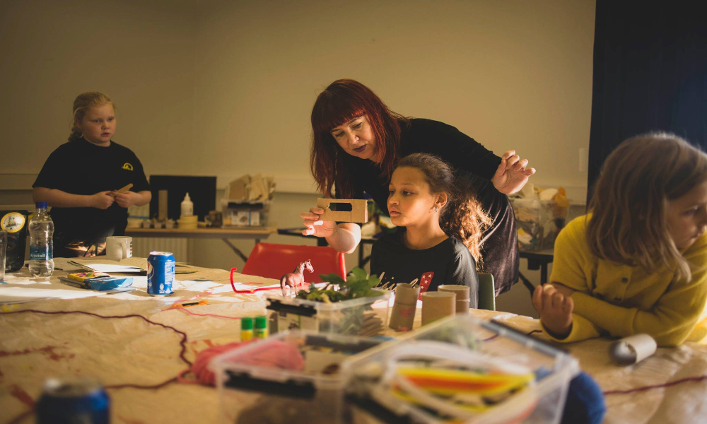
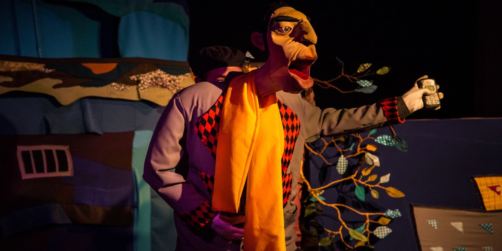
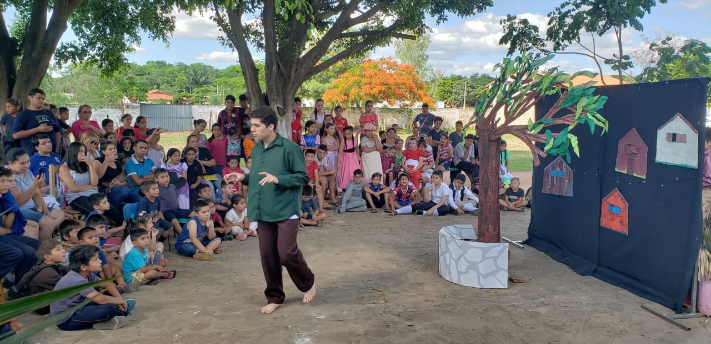

South American artist and social psychologist currently residing in Iceland.
In my work I seek to connect and strengthen community ties through art.
Since 2008 I began my path in physical theater, projects that combine art and community, illustrated books, poetry, puppet theater, recycled art and cultural management.
Since my arrival in Iceland in 2019, in addition to continuing to develop art forms and workshops for children, I have had experience in tourism related work.
Edited Story Books
https://issuu.com/adricloss/docs/tengouncuento
https://www.lanacion.com.py/espectaculo/2019/04/04/relanzaran-libro-objeto-vidas-siete-acertijos-en-diversidad/

LATEST WORK EXPERIENCES
Performer at List i Ljóst - Light Festival, Seydisfjordur. February 2024.


Puppeteer and actress for the national theater production “Hollvættir á heiði” directed by Ágústa Skúladóttir and producer by Sláturhúsið á Egilsstöðum. September to December 2023.
Executive Producer and performer at “Secrets of ñandutí” puppet and shadow theater show co produced by Kunu'u Títeres, Paraguay - Cia do Abração, Brasil. Premiered in Brazil, January 2023. Premiered in Municipal Theater of Asuncion, Paraguay, 11th February 2023. International and national tour, July 2024

Tourist guide in east Iceland. Tanni Travel. May to September 2023.
Cook in charge of the kitchen during “Ljósmyndagar á Seyðisfirði / Photography Days in Seyðisfjörður”. Ströndin Studio. May 2023
Artist-puppeteer and workshop lead in “Young Arctic Creatures Workshop” with photographer Jessica Auer. Funded by Skaftfell Art Center. The students shared their stories through the ingenious use of found objects, performance, and portraiture. May 2023
Art teacher at Seydisfjardaskóli Elementary School, Seydisfjordur, Iceland, since August 2020 to June 2022.
 https://seydisfjardarskoli.sfk.is/is/frettir/category/1/dear-you-verkefnid-hja-2-og-3-bekk
https://seydisfjardarskoli.sfk.is/is/frettir/category/1/dear-you-verkefnid-hja-2-og-3-bekk
 https://seydisfjardarskoli.sfk.is/is/myndir/skuggaleikhus
https://seydisfjardarskoli.sfk.is/is/myndir/skuggaleikhus
https://seydisfjardarskoli.sfk.is/is
Cook, part of the kitchen team during the Lunga Festival, June 2022.
Collaborator in DEAR YOU ART PROJECT, created by Arlene Tucker. Connecting children from Iceland with children from other countries, such as Ukraine and USA, with an emphasis on puppets as cross-cultural bridges. Seydisfjordur, Iceland. September 2021 to May 2022.
 https://www.dearyouartproject.com/
https://www.dearyouartproject.com/
 https://seydisfjardarskoli.sfk.is/is/frettir/category/1/dear-you-verkefnid-hja-2-og-3-bekk
https://seydisfjardarskoli.sfk.is/is/frettir/category/1/dear-you-verkefnid-hja-2-og-3-bekk
Since May 2019 she has been living in Iceland where she has performed Lambe Lambe Theater shows and different workshops with youth and children. She has participated in festivals and has developed 2 art and community empowerment projects with the support of Samtök Sunnlenskra Sveitafélaga -SAS- (2020) and Uppbyggingarsjóður Austurlands (2022) funds.
 https://eystrahorn.is/stories-with-bodies
http://stories.fas.is/
https://eystrahorn.is/stories-with-bodies
http://stories.fas.is/
Misplaced Gaze
Exhibition of photography by Juanjo Ivaldi and poetry by Tessa Rivarola. Inaugurated as "Mirada extraviada" in April 2021 at the Castillo de Mata Museum, curated by the Francis Naranjo Foundation.
https://drive.google.com/file/d/10z5rD-0jaQPZHDMMTE-kwG5j_N6iQjSp/view?usp=sharing
 https://www.austurfrett.is/lifid/ur-fjoelmenni-paragvai-i-famenni-seydhisfjardhar
https://www.austurfrett.is/lifid/ur-fjoelmenni-paragvai-i-famenni-seydhisfjardhar
During the whole month of March 2022 in Egilsstaðir - Neskaupstaður - Seyðisfjörður: Traveling exhibition through the fjords of East Iceland, which has included in each location a workshop "Youth Perceptions of Climate Change" in which a total of 68 young people have participated.

This project has been supported by Uppbyggingarsjóður Austurlands.

Stories with Bodies
She has designed and conducted the physical theater workshop for high school students called "Stories with bodies", city of Höfn. Within the framework of the project creativity and community empowerment called: Sögur og samfélags tengsl / Stories and community ties with the support of Samtök Sunnlenskra Sveitafélaga (SAS) funds.

Director of the Performance: Stories with bodies.

Co-organizer in community activity "Human Library" at Höfn library, Hornafjöður (2019).

Hvammstangi International Puppetry Festival
Participation in Hvammstangi International Puppetry Festival, Iceland, which took place in October 2020. Presenting Lambe lambe theater show.


Workshop "Little stories with miniature puppets".
Guiding workshop in Herðubreið, the community center of the city of Seyðisfjörður, during the 2020 fall festival.
 https://www.facebook.com/thehipfest/
https://www.facebook.com/thehipfest/
Dear You Art Project
Since October 2021 she collaborates with artist Arlene Tucker (Finland), creator of Dear You Art Project, connecting children from Iceland with children from other countries, such as Ukraine and USA, with an emphasis on puppets as cross-cultural bridges.
The Kunu´u Títeres company
Since 2009 and currently part of the Kunu´u Tïteres company, the Kunu´u Títeres company is made up of Carola Mazzotti and Tessa Rivarola, it has been carrying out puppet works, doll construction workshops and productions in Paraguay of puppetry shows and puppeteers from other countries.
 Blog Kunu'u Titeres Facebook Kunu'u Titeres Instagram Kunu'u TiteresKunu'u Titeres in Iceland.
Participation of 2 Lambe Lambe plays in the 2nd International Puppet Festival in Hvammstangi, HIP Festival. October, 2021
 Theater of the small, at the National.
Theater of the small, at the National.

Lambe Lambe Theater of Kunu'u Puppets
Participating in the UNGI Fest in the Art for Children week organized by Assitej Ísland in Reykjavik, Iceland. April 8-9, 2022
 https://www.facebook.com/assitej.iceland/
https://www.facebook.com/assitej.iceland/


Development of the workshop "Small worlds for miniature puppets" during the HIP Festival (October, 2021).
 https://kunuutiteres.com/2022/03/22/kunuu-titeres-de-paraguay-hasta-islandia-con-teatro-lambe-lambe/
https://kunuutiteres.com/2022/03/22/kunuu-titeres-de-paraguay-hasta-islandia-con-teatro-lambe-lambe/

Community Arts & Processes
Since 2004, she designs and leads social projects where she combines art, creativity and strengthening community ties, together with non-governmental organizations and social movements.

Between 2005 and 2012 he was part of the spontaneous theater company Kusuví, directed by Lirio Obando, with whom he made interventions in the streets, squares and public schools addressing social problems with this participatory device

Since 2009, it has been developing street theater interventions and torture sites during the dictatorship “Arte por la memoria” together with Servicio Paz y Justicia Paraguay (SERPAJ PY).

Between 2008 and 2014 she was part of the Hara Teatro company, directed by Wal Mayans, with whom she carried out 7 years of anthropological theater laboratory and participated as an actress in tours with plays in Curitiba, Fortaleza (Brazil), Córdoba (Argentina ), Fara Sabina (Italy) and Shanghai (China).

Some Jobs between 2015 and 2018:
Art Specialist in the Violence Prevention and Social Insertion Project. Executed in the San Carlos neighborhood of the city of Luque with financing from the IDB and executed by the CIRD Foundation. From March to December 2018.
Unipersonal directed by Raquel Martínez "Remedios Varo, a surrealist soul" in the Spanish-American theater cycle of the Spanish cultural center Juan de Salazar. December 2018.
 https://www.eluniversal.com.mx/cultura/obra-de-teatro-recupera-la-vida-olvidada-de-la-artista-exiliada-remedios-varo
https://www.eluniversal.com.mx/cultura/obra-de-teatro-recupera-la-vida-olvidada-de-la-artista-exiliada-remedios-varoBird Girl. A tribute to Alejandra Pizarnik ”, a work that combines theater and manipulation of objects. Co-production Kunu´u Puppets and Miniature Theater Paraguay. It premiered in September and toured Posadas and Resistencia - Argentina in 2016.
In 2017 it was presented at the Centro Cultural Paraguayo Americano (CCPA).
 Niña-pájaro-vuela-posadas
Niña-pajaro-en-el-ccpa
YouTube Niña Pájaro
Niña Pájaro en el Teatro de las Americas
Niña-pájaro-vuela-posadas
Niña-pajaro-en-el-ccpa
YouTube Niña Pájaro
Niña Pájaro en el Teatro de las AmericasNational tour (Asunción, Encarnación, Pilar, Ciudad del Este) and international (Buenos Aires / Curitiba) with the work "Broken Doll", performance and installation on social mandates and their effects on bodies. The multimedia proposal was followed by a debate around women / body / desire / power. Together with the artists Ana Brisa Caballero and Marisol Salinas. From June to November 2015.
 https://www.ip.gov.py/ip/munequita-rota-recorrera-escenarios-nacionales-e-internacionales/
https://www.ip.gov.py/ip/munequita-rota-recorrera-escenarios-nacionales-e-internacionales/In 2015 he premiered his first Solo “Bellmerides” in Berlin with the direction of Marisol Salinas (El Salvador) and the artistic assistance of Birgitt Asshoff (Berlin).
In the same year, 1 presentation of the solo Bellmerides was made in Madrid and 10 presentations together with 2 other short works in El Granel, meeting place, Asunción. Within the framework of the production “A cappela”, Jorge Báez's original idea.
 http://ea.com.py/una-transgresora-apuesta-sobre-la-identidad-de-la-mujer/
http://ea.com.py/una-transgresora-apuesta-sobre-la-identidad-de-la-mujer/
Link to Facebook Girl Bird